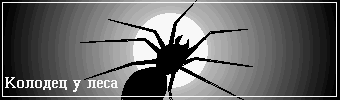

Колодец у леса
Более жуткий случай и представить нельзя. Даже теперь, когда много лет
спустя я вспоминаю события, мои волосы встают дыбом. И всегда мысленному
взору представляется тарантул. Ужасного вида земляной паук, настоящее
чудище, которое боится света и большую часть жизни проводит в глубокой норе.
Только ночью он выходит на поверхность и рыщет в поисках жертвы, бесшумно и
стремительно.
В деревню Опушки я попал по распределению после института. Казалось бы,
инженер по части процессорных систем, все дороги открыты - карьера,
зарплата, международные симпозиумы. Но жизнь - сплошная проза. И сидит этот
инженер в богом забытой деревне, внедряя автоматизированную систему подачи
кормов.
Общество сельской молодежи, вечно пьяной и обкуренной, меня совершенно не
привлекало и я очень быстро сошелся с нашим агрономом Иваном Ильичем. Это
был человек колоссальной эрудиции и настоящий аристократ, каких немного
уже осталось в наше поганое время. Его домашняя библиотека могла, пожалуй,
украсить квартиру любого столичного профессора. Суждения отличались
невероятной глубиной и не возникало никаких сомнений, что все эти книги
он прочел. При этом Иван Ильич был утонченным ценителем искусства и отлично
исполнял сонаты Бетховена на раздолбанном клубном пианино. Меня он всегда
называл по имени - отчеству, Василий Андреевич, хотя лет ему было за
пятьдесят и я в дети ему годился. Долгие зимние вечера мы частенько коротали
вместе за бокалом отличного самогона и вели непринужденные светские беседы.
Он да я - этим, собственно, и исчерпывалась интеллектуальная элита деревни
Опушки. Впрочем нет, была еще докторша, женщина лет сорока. Но она твердо
предпочитала компанию молодых механизаторов.
Отлично помню тот дождливый субботний вечер в июне. Я расставил мышеловки
и совсем уже собирался завалиться на диван с книжкой "Промышленные
микропроцессорные системы", когда в дверь постучали. Это был мой друг
агроном.
- Вы позволите? Ах, простите, ну и ноги у меня!
Судя по сапогам Иван Ильич был весьма взволнован. Раньше он непременно
споласкивал обувь в луже у крыльца, а сейчас почему-то забыл.
- Ничего, ничего. Подумаешь! Обычная грязь, - отмахнулся я, - на мои сапоги
полюбуйтесь. Это вам не что-нибудь, но свиной навоз! Да! И боюсь, что
отвалится не раньше августа. Что это вам в такую погодку дома не сидится?
А я как раз приготовил трехлитровочку по вашему рецепту. Исключительного
качества напиток! Эта ваша идея с ионной очисткой... Я просто потрясен!
- Я с вами посоветоваться хочу, Василий Андреевич, - ответил мой друг,
пропуская комплимент мимо ушей, - и дело, боюсь, серьезно. Позвольте я
присяду... Вы были утром на поляне?
Конечно я был сегодня на поляне. То что случилось утром, произвело на всех
жителей Опушек тягостное впечатление.
Раз в неделю наше село становилось местом сбора городской мафии.
Собирались на большой поляне у леса. С раннего утра катились по
деревенским улицам "Вольво", "Оппели", "Мерседесы" и к полудню поляна
напоминала автомобильную стоянку у какого - нибудь европейского
супермаркета. Цель этих мероприятий нам, простым смертным, была не ведома.
Накачанные лысые молодые люди о чем-то беседовали, собирались в группы,
пересаживались из машины в машину. Наш участковый, впрочем, смотрел не это
дело сквозь пальцы. Не пьют, дескать, не хулиганят, стало быть никакого
нарушения нет.
Но сегодня утром на поляне произошло ЧП. Таинственным образом погиб
какой-то ихний то ли "пахан", то ли "братан", словом, большая мафиозная
шишка.
На самом краю поляны, у леса, есть старинный заброшенный колодец. Когда
его строили - никто не знает. Известно только, что глубиной он более
двадцати метров и воды в нем нет. Так вот, этот "пахан" уселся на край
древнего каменного ограждения и, ведя беседу, полез в карман брюк за
зажигалкой. При этом он чуть-чуть откинулся назад, потерял равновесие и
полетел вниз.
Через час на место происшествия прибыла милиция из района, скорая помощь,
группа спасателей - спелеологов и все население деревни Опушки. Один из
спасателей спускался в колодец с кислородным аппаратом а потом долго о
чем-то беседовал с капитаном милиции. После этого капитан объявил, что
человек погиб, но поднять тело не представляется возможным. К полудню
все разъехались. Вот такая история произошла сегодня утром.
- Понимаете, Василий Андреевич,- сказал агроном, пристально глядя на меня,-
я случайно видел, как он упал. И дело здесь не чисто.
- Столкнули что ли? - я пожал плечами, - так это у них - раз плюнуть. И
вообще, чего вы так волнуетесь? Одним дебилом меньше...
- Нет, не столкнули. Тут гораздо хуже... налейте что ли, действительно...
спасибо... Вы тут человек новый и быть может не знаете, что этим колодцем
детей пугают, Дескать там черт живет и по ночам выходит на поверхность.
- Ну, Иван Ильич...
- Да, я знаю, что вы скажете. Мол человек с высшим образованием и такую
чепуху говорит. Но заметьте, если черт все-таки существует, то ему чихать,
слышите? Чихать, какое у вас образование!
Я с удовлетворением отметил, что мой напиток и вправду удался. Еще бы!
Всего полстакана и вот уже мой собеседник рубит ладонью воздух и несет
чудовищную ахинею.
- Знаете, Иван Ильич, - я попытался сменить тему, - эта ваша идея насчет
ионной очистки...
- Позвольте! - перебил меня агроном, - я главного не сказал... э-э-э...
налейте, пожалуй по еще... спасибо... так вот. Вы знаете историю про
корову деда Степана?
Я хотел бало улыбнуться, но что-то меня остановило. Взгляд моего
собеседника вдруг сделался жалким и растерянным.
- Жил тут дед Степан, ветеран войны, умер в том году, - продолжал Иван
Ильич, - и была у него корова, обладающая чудесным свойством сбегать от
своего хозяина. Но обычно через пару дней кто-нибудь приводил или сама
возвращалась. Однажды вечером она в очередной раз сбежала, а ночью...
ночью все деревня проснулась от жуткого крика. Это был душераздирающий
звериный вой, - мой друг начал покрываться зеленоватой бледностью. - Утром
нашли то, что осталось от коровы. У колодца. Вся поляна была залита кровью,
а по траве раскиданы кости коровьего скелета. И больше ничего! Я видел
эту картину собственными глазами и знаете какое у меня сложилось
впечатление?
- Какое? - спросил я, переходя на шепот.
- Впечатление, что корову кто-то сожрал. Да! Сожрал как цыпленка,
обсасывая и бросая каждую косточку... Только кровь, очень много крови и
кости, равномерно лежащие вокруг колодца. Никто так и не узнал,
что же все таки случилось той проклятой ночью на поляне.
- Мда... То что вы рассказали конечно очень серьезно, - сказал я
задумчиво, - признаться я уже слышал про это случай, но краем уха, без
подробностей.
- Но это, поверьте, только цветочки. А сейчас я расскажу главное. Сегодня
утром я ходил в лес за травами. Мне для почек полезно. Так вот, на обратном
пути нужно было пройти через поляну. А там как раз очередное сборище. Ну вы
знаете, Василий Андреевич, терпеть я не могу этих лысых придурков.
Остановился я у самой опушки в кустах и думаю, идти дальше или лесом
обогнуть. Колодец этот в десяти шагах от мня был. И вижу, сидит на краю
спиной ко мне мужик, а еще несколько перед ним стоят и слушают. Полез,
значит, мужик рукой в карман и тут... С точки зрения свидетелей все так и
случилось - потерял равновесие и опрокинулся. Но я - то видел все с другой
стороны, сзади! Не сам он упал, Василий Андреевич, и не столкнули. Его
утащили в колодец!
- О, господи, - похолодел я.
- Понимаете, кусты немного мешали смотреть, но это было нечто
стремительное, то ли серое, то ли коричневое. Волосатое. Оно вцепилось ему
в спину и сдернуло в колодец. Слышали бы вы, как он заорал. Потом началась
суматоха и я под шумок пошел домой. Вот я и хочу посоветоваться, как лучше
об этом сообщить?
Я пожал плечами:
- Все, что вы рассказали, конечно очень странно, но думаю, вам никто не
поверит. К тому же в колодец спускались и никакого черта не обнаружили.
- А тело? Почему нельзя поднять тело? Много бы я дал, чтобы узнать, что
там на дне. После того случая с коровой я даже всерьез подумывал,
а не спуститься ли. Человек я любознательный. Но у меня снаряжения нет и,
честно говоря, страшно. А теперь - тем более. Но сейчас есть хорошая
возможность пролить свет на все это дело. Не сходить ли мне завтра к
участковому? Дать свидетельские показания, а? Может займутся знающие люди
этим колодцем. Иначе, боюсь эта чертовщина будет продолжаться. За людей я
беспокоюсь в первую очередь.
- Да, пожалуй действительно, молчать не стоит. Поверят или нет - это
другой вопрос, но совесть, по крайней мере, будет чиста.
- Тогда решено. Рад, что вы тоже так думаете, а то я все сомневался, а
не дурак ли я... Налейте, пожалуй по последней, да я и побегу, бо поздно
уже... спасибо.
Иван Ильич ушел, а я сбросил с дивана книжку "Промышленные
микропроцессорные системы" и завалился спать. Засыпая я пытался собрать
воедино все то, что сегодня услышал. Когда сознание мое почти отключилось,
какая-то неопределенная догадка пронеслась у меня в голове. Я вдруг понял,
что все это я либо уже знаю, либо где-то видел, либо... Так и не успев
осознать свою догадку, я уснул.
Утро выдалось на редкость солнечное и теплое. Я встал часов около десяти,
позавтракал, с удовольствием побрился, влез в свои грязные сапоги и вышел
на крыльцо с утренней сигареткой. Тепло. Вчерашний дождь хорошо потрудился
над моим огородом и я с радостью понял, что поливка огурцов отменяется.
Я блаженно зажмурился от солнечного света. Промышленные системы тоже
отменяются. Необходимо срочно придумать программу выходного дня.
Уазик нашего участкового скрипнул тормозами у калитки и вывел меня из
состояния радостной медитации.
- Поедемте! - донесся из за забора голос моего друга агронома.
Калитка отворилась и появился он сам. Иван Ильич весь светился от
возбуждения. Сапоги на этот раз были начищены до зеркального блеска, а от
одежды исходил тонкий аромат французского одеколона.
- Поедемте, - повторил он, пританцовывая от нетерпения, - сейчас начнется!
- Поедемте! - мгновенно среагировал я, отбрасывая сигарету и залазя в
машину, - Чего начнется? Куда едем?
Уазик рванул с места в направлении леса.
- На поляну, к колодцу - пояснил агроном, плюхнувшись рядом на заднее
сиденье, - Я ходил сегодня к участковому и все рассказал. Сейчас будет
какой-то там следственный эксперимент.
- Поверили вам, выходит. Не ожидал.
- Поверили, но дело даже не в этом. Погибший был какой-то важной птицей.
Это раз. И, самое главное, тот спасатель, что вчера спускался в колодец,
что-то рассказал. Не знаю что. Все встали на уши. Вроде следственная группа
из города уже с утра там.
Уазик между тем свернул с деревенской улицы и, поплутав несколько минут
в грязи между картофельным полем и птицефермой, остановился, наконец, на
поляне перед лесом. У колодца действительно царило оживление. Я без труда
узнал вчерашние машины горно-спасательной службы и районной милиции. Были
еще две "Волги", расцвеченные синими мигалками, между которыми важно
расхаживали человек пять - шесть, по виду явно городские.
Иван Ильич, лишь только ступил на землю, сразу был уведен к одной из
этих машин. Он что-то говорил, по обыкновению отчаянно жестикулируя, а один
из городских кивал с серьезным видом и писал в блокнотe. Потом мой
друг и сопровождающие полезли в кусты на опушке, где, как я понял, Иван
Ильич объяснял, как он вчера стоял и что видел.
Один лишь я оказался не у дел и, пользуясь случаем, отправился прямиком
к колодцу.
Колодец как колодец, сотни раз его видел. Очень старый несомненно. Лет
не меньше ста. Невысокое ограждение сложено из массивных каменных блоков,
очень хорошо пригнанных без всякого раствора. Камень кое где был основательно
разрушен временем и покрыт наростами вековых лишайников.
Признаюсь, я очень долго колебался прежде чем приблизиться вплотную.
Вчерашний рассказ моего друга нагнал на меня тревогу и смутные предчувствия.
В конце концов я все же стряхнул с себя глупые мысли, осторожно оперся об
ограждение и глянул вниз. Черный ствол, выложенный старинной каменной
кладкой уходил во тьму на сколько хватало глаз.
И вдруг меня как током ударило. Я ясно вспомнил, что именно представилось
мне вчера ночью в полусне.
Тарантул, огромный земляной паук, покрытый бурой шерстью. Он боится
солнечного света и всегда сидит в своей норе. Нора обычно небольшая, размером
с двухкопеечную монетку, круглая и вертикальная как шахта. Кажется
невероятным, как такое чудище ухитряется пролазить сквозь это отверстие.
Но горе тому жуку или кузнечику, который по неосторожности окажется на краю.
Стремительный бросок мохнатых лап и жертва уже глубоко под землей. И
начинается кровавое пиршество.
На мгновение меня парализовал совершенно дикий животный ужас. Я вдруг
отчетливо вспомнил слова Ивана Ильича: "Это было нечто стремительное, то ли
серое, то ли коричневое. Волосатое. Оно вцепилось ему в спину и сдернуло
в колодец..."
Я отпрянул, попятился и, споткнувшись обо что-то, грохнулся на траву.
Падение привело меня в чувство. О господи! Представится же такое!
Я быстро отошел подальше под тень деревьев, с трудом удерживаясь, чтобы
не побежать. Меня трясло. Я сел на траву и закурил.
Очнулся я от того, что кто-то подошел и опустился рядом.
- Жарко сегодня, - раздался незнакомый голос.
Я без труда узнал этого человека. Тот самый спасатель, что спускался вчера
в колодец. Совсем молодой парнишка, лет девятнадцати, не больше, одетый в
куртку защитного цвета. В руках он держал странное устройство, напоминающее
противогаз.
- Кислородная маска, - пояснил он и вздохнул, - опять заставят лезть. А
мне бы куда угодно, только не туда.
- Там что, воздуха нет?
- Может нет, может есть... Положено так.
- А что там вобще на дне? - спросил я, внутренне холодея.
- Жуткое дело там, - ответил паренек очень серьезно, - Я поэтому и боюсь
лезть... Предчувствие какое-то... Понимаете, туда вчера человек упал, но
тела нет. Зато все облито кровью, и дно и стены. Очень много крови и куча
костей. Больше ничего. Ума не приложу, как такое может быть. Знаете,
я бы лучше денег дал, но туда не полез.
- А зачем опять спускаться? - поинтересовался я.
- Хрен его знает, говорят, ищи что-нибудь подозрительное. Да нет там
ни фига! Грязь одна и карст.
- Что-что?
- Карст, говорю. Такое обычно бывает в пещерах. Колодец у самого дна
в сплошной скале пробит и все стены в трещинах, дырах. Через них раньше
вода поступала.
- Большие дыры то?
- Не, даже ребенку не пролезть... Ну вот, уже зовут. Пошел я, в общем...
Он подхватил свой прибор и поплелся к товарищам, которые уже начали
выносить из машины какое-то снаряжение. Я двинулся следом.
Человека, моего нового знакомого, с кислородной маской и сильным фонарем
на шлеме обвязали веревкой, перекинутой через блок, и опустили вниз. Кроме
этой главной веревки, удерживаемой четырьмя дюжими парнями, был еще тонкий
шелковый шнурок, вроде того, что используется водолазами. Если человек
внизу дернет за шнурок, это будет сигналом к подъему. Другой конец этого
шнурка держал в руках хмурый седой человек, начальник группы. Метр за метром
веревка скользила по блоку, пока не ослабла на отметке "двадцать восемь".
Спасатели беспечно разлеглись на солнышке, а я, томимый смутными опасениями
опять подошел к краю. Где-то на огромной глубине сиял маленький, как
звездочка огонек, свет фонаря на шлеме. Нет, ничего не разобрать. Внезапно
шнурок дернулся.
- Поднимайте, - скомандовал начальник.
Дюжие парни лениво встали и взялись на веревку. Шнурок дернулся еще раз,
и еще, и вдруг забился, будто в судороге.
- Да тяните же! Быстрее... Что за черт?
Шнурок рвался из рук, обезумев. Огонек внизу вдруг затанцевал, заметался
из стороны в сторону и погас. Одновременно из черной глубины раздался
ужасный человеческий крик.
- Маску сорвал, - побледнел седой спасатель, - тяните! Эй! Да помогите же
кто-нибудь!
Все кто был рядом - я, Иван Ильич и даже городские ухватились за веревку.
Мальчишками мы ловили тарантулов. Маленький кусочек пластилина цепляется на
длинную нитку и опускается в нору. Паук принимает приманку за жучка и
хватает ее. В этот момент нитку нужно быстро выдернуть. Тарантул бросается
в погоню и неожиданно для самого себя выскакивает на поверхность. Там
он и остается, жирное мохнатое чудище, привыкшее к темноте и ошалевшее
от солнечного света.
Рывок, еще рывок. Со скоростью несколько метров в секунду веревка шла
вверх. Я уже не сомневался и точно знал, что увижу через мгновение.
Вот над краем колодца появилась голова человека с окровавленным страшным
лицом. Он перемахнул через ограждение и бросился бежать. Я рванулся было
следом и тут же налетел на Ивана Ильича. Мой друг стоял, окаменев, и смотрел
в сторону колодца широко раскрытыми глазами.
- О боже, - прошептал он, - вы только посмотрите на это.
Я обернулся. Из колодца одна за одной выскакивали огромные бурые крысы.
Каждая размером с собаку. Солнечный свет ослепил их. Отвратительные твари
со слезящимися слепыми глазами сбились в кучу на краю и скалили желтые
клыки. Секундой позже все они ринулись вниз.
Вечером мы с Иваном Ильичем как обычно сидели у меня и вели светскую
беседу.
- Ну и денек, - говорил мой друг, опрокидывая очередную стопку, - не
мудрено, что парень так испугался. Живет же на свете такая гадость.
Наверное какие-то мутанты, раз по вертикальным стенкам бегают! Изо всех
щелей, говорит, полезли десятками. Ну, слава Богу, обошлось. А ведь могли
и слопать как ту корову. Вы не знаете, он сильно ранен?
- Ерунда, три царапины. Поколотился о стенки при подъеме. Им сейчас наша
докторша занимается. Вот счастье привалило старушке!
- Знаете, Василий Андреевич, вы как хотите, а я иду завтра к председателю.
Попрошу чтобы этот проклятый колодец забетонировали. За людей страшно...
Налейте-ка по еще... Спасибо... а признайтесь честно, что вы думали на
счет этого дела?
- Стыдно сказать, - я виновато улыбнулся, - думал, что огромный паук. А
вы?
- А я думал - Черт. - очень серьезно ответил агроном.
(C) *** JES 2000 *** Юрий Шимановский
http://shymanovsky.mooo.com
Назад|На главную